Plot camera trap activity over time
mm_plot_camtrap_activity.RdVisualizes the activity history of camera trap deployments to show periods of data capture. It also optionally highlights periods of inactivity (break/gap).
Usage
mm_plot_camtrap_activity(
data,
deployment,
datetime,
threshold = 5,
time_unit = "days",
format = NULL,
activity_style = list(width = 0.8, color = "steelblue", alpha = 0.7),
break_style = list(width = 0.8, color = "#c90026", alpha = 0.9),
show_gaps = TRUE,
ylabel_format = "%Y-%m-%d",
ybreak = paste(1, time_unit)
)Arguments
- data
A data frame containing the datetime column.
- deployment
Column name (unquoted) that identifies the deployment or camera ID.
- datetime
The datetime column.
- threshold
A numeric value indicating the minimum gap to be considered a break (default is 10).
- time_unit
The unit for the threshold. Supported values include "secs", "mins", "hours", "days", and "weeks".
- format
Optional. A character string specifying the datetime format, passed to
as.POSIXlt.- activity_style
A list controlling the appearance of active periods. Can include:
width: Line width (default 0.8)color: Color of activity bars (default"steelblue")alpha: Transparency (default 0.7)
- break_style
A list controlling the appearance of gaps/inactive periods. Can include:
width: Line width (default 0.8)color: Color of gap bars (default"#c90026")alpha: Transparency (default 0.9)
- show_gaps
Logical. If
TRUE(default), shows vertical bars for detected gaps in deployment activity.- ylabel_format
Character. Format for y-axis date-time labels. Default is
"%Y-%m-%d".- ybreak
Character. Spacing for y-axis breaks, e.g.,
"1 days"or"12 hours". Default is based ontime_unit.
Examples
# Load example data and filter for one project
camtrap_data <- read.csv(maimer:::table_files()[1]) %>%
dplyr::filter(project == "Last")
# Plot with default styles
mm_plot_camtrap_activity(
data = camtrap_data,
deployment = camera,
datetime = datetimes,
threshold = 7,
time_unit = "days"
)
#' # Customize plot appearance
mm_plot_camtrap_activity(
data = camtrap_data,
deployment = camera,
datetime = "datetimes",
threshold = 15,
time_unit = "days",
ybreak = "3 days",
activity_style = list(width = 1.1, color = "gray10")
)+
ggplot2::theme(axis.text.x = ggplot2::element_text(angle = 45, hjust = 1))

#'